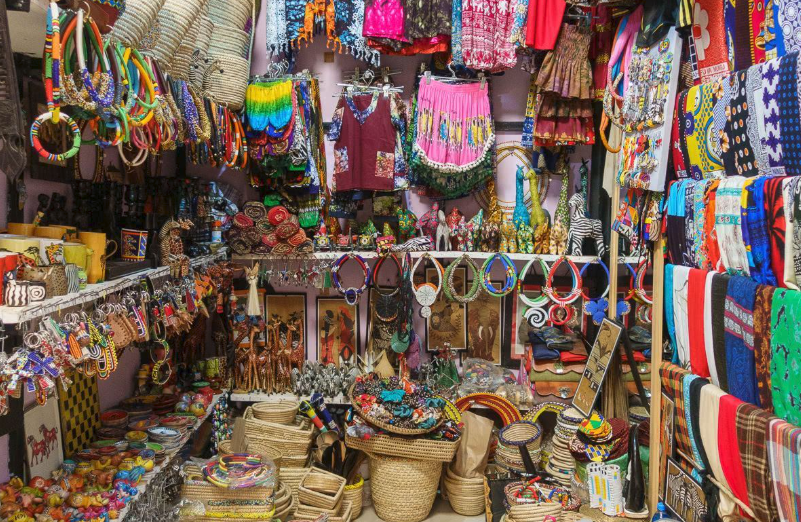
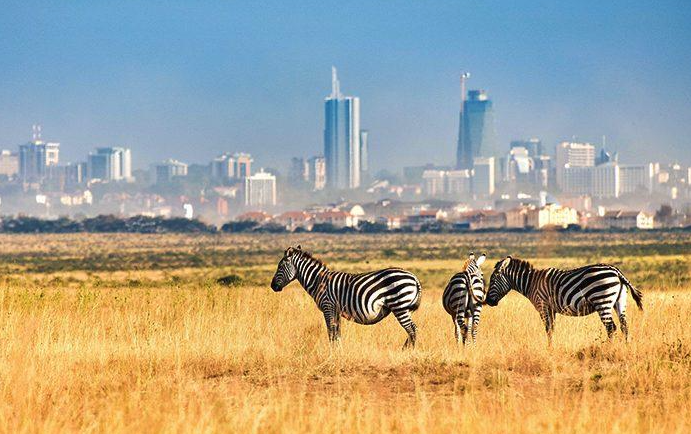
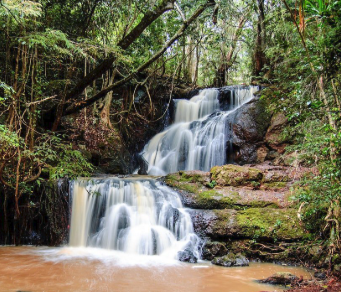

Get a Little Culture!
Take a piece of Kenya home! Wander through Maasai Market and discover colourful beadwork, handmade jewellery, traditional artefacts, paintings and unique souvenirs.
Explore Culture →Oh, you're in for a treat! From discovering Kenya's rich history at the National Museum to shopping for beautiful handmade treasures at Maasai Market, Nairobi has plenty to keep you busy. Get up close with giraffes, explore the city's exciting attractions, taste delicious Kenyan food and escape into the beautiful trails of Karura Forest. There's so much waiting for you!

Five ways to experience Nairobi. Come along, there's plenty to explore!

Take a piece of Kenya home! Wander through Maasai Market and discover colourful beadwork, handmade jewellery, traditional artefacts, paintings and unique souvenirs.
Explore Culture →.png)
Who said you have to leave the city to experience wildlife? Visit the famous Giraffe Centre, encounter fascinating animals and discover Nairobi's wild side.
Explore Nature & Wildlife →
Curious about Kenya's story? Explore the National Museum, discover fascinating exhibitions and learn about Kenya's history, culture and natural heritage. Don't forget to pop into the Snake Park next door!
Explore History →
Fancy a little adventure? Cycle through Karura Forest, explore beautiful trails, discover waterfalls or visit the Museum of Illusions. There's always something fun to do!
Explore Recreation →.png)
Ready to taste Kenya? Try traditional Kikuyu mukimo, the famous nyama choma, delicious ugali, chapati and other local favourites. Good food and great vibes await!
Taste Kenya →Every destination has a story. We'd love to hear about your Nairobi experience!